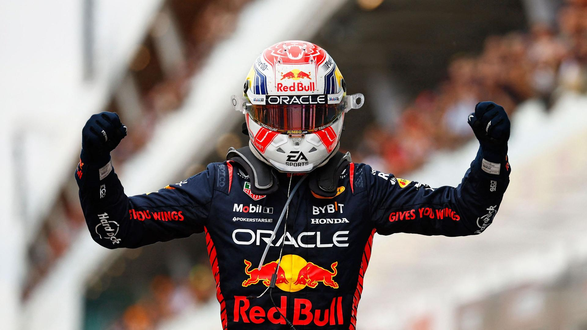
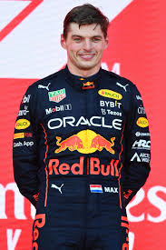
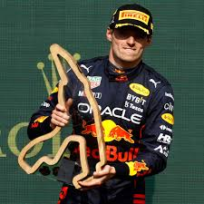

Max Emilian Verstappen, born 30 September 1997 is a Belgian and Dutch racing driver competing in Formula One, where he is the 2021, 2022, and 2023 World Champion. He races under the Dutch flag in Formula One for Red Bull Racing. Verstappen is the son of former Formula One driver Jos Verstappen, and former go-kart racer Sophie Kumpen. He had a successful run in karting and single-seater categories – including FIA European Formula 3 – breaking several records.At the 2015 Australian Grand Prix, when he was aged 17 years, 166 days, he became the youngest driver to compete in Formula One. After spending the 2015 season with Scuderia Toro Rosso, Verstappen started his 2016 campaign with the Italian team before being promoted to parent team Red Bull Racing after four races as a replacement for Daniil Kvyat. At the age of 18, he won the 2016 Spanish Grand Prix on his debut for Red Bull Racing, becoming the youngest-ever driver and the first Dutch driver to win a Formula One Grand Prix.
For all bio please click the picture
|  |  |  |
| Podium Azerbaijan | Podium Belgian | Max and Hamilton |